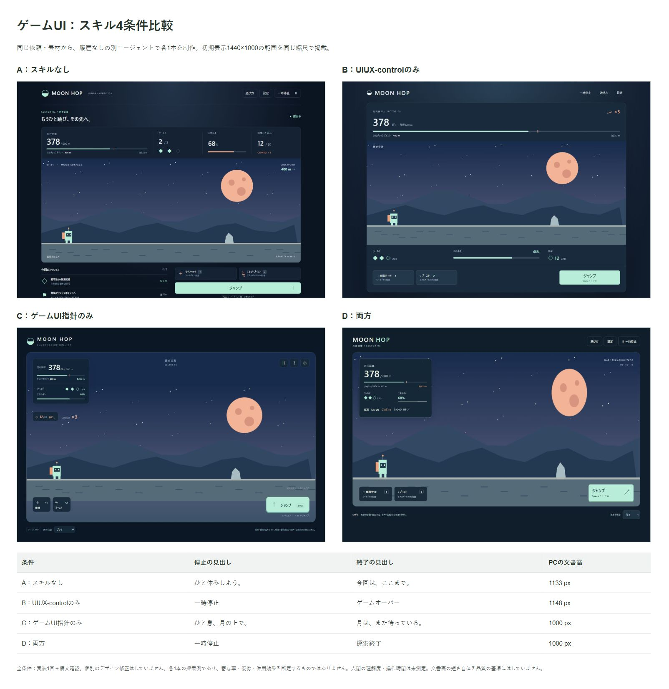

制作事例へゲームUIの4条件比較
同じ要件・素材を渡し、会話履歴なしの別エージェントで各1本を制作。実装1回＋構文確認で終了し、納品後のデザイン修正はしていません。
PCは1440×1000、スマホは390×844相当（測定時の表示高845px）。文書高は長いほど悪いとは限りません。ジャンプ下端は初期表示上端からの位置で、Aは下端が3pxほど表示外、他は表示内でした。

今回見えたこと
- B/Dでは、停止・終了を直接表す見出しになりました。
- C/Dでは、PCの文書が表示高に収まりました。
- Bにも数値の重複が残ります。スキルを渡すだけで全原則が守られるわけではありません。
各1本の探索例です。偶然の生成差を排除できず、寄与率・優劣・併用効果は断定できません。人間の理解度や操作時間も測定していません。
制作条件と確認範囲
同じ親セッション・同じエージェント種別で、モデルと推論設定の上書きなし。実際の計算量・出力長・所要時間を揃えた実験ではありません。許可されたファイルだけを読んだ旨を各エージェントの報告で確認しています。
全条件で装備使用後のシールド3/3・エネルギー88%・残数、停止・結果・再試行、音量60→61を確認。画像は初期表示範囲のみで、スクロール外の領域は含みません。
検証メモ · 共通依頼文 · 条件・スキルのハッシュ · 測定値